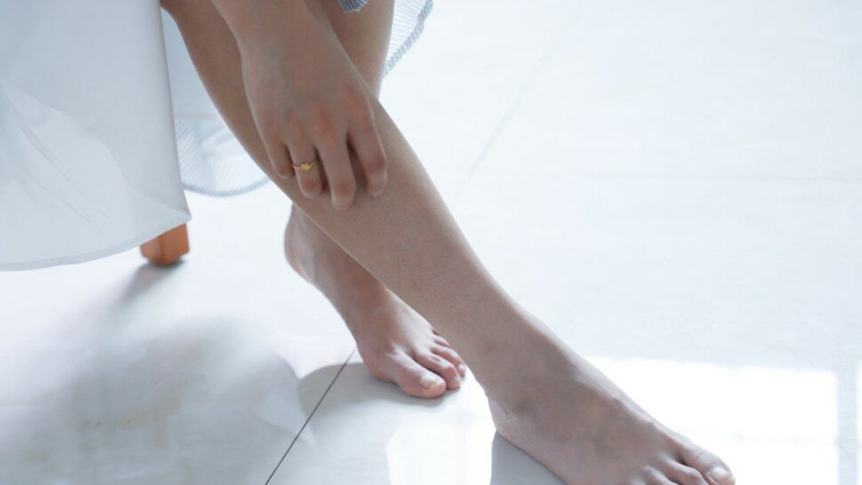

Les enthésopathies : symptômes, causes et traitement

Moins familières que les tendinites, les enthésopathies sont la cause de douleurs notamment dans la spondylarthrite ankylosante et représentent 10 à 60% des patients atteints de cette pathologie [1]. Elles font partie de la famille des tendinopathies. Les principaux conseils de prévention de ces tendinopathies sont une alimentation saine et une activité physique régulière.

Sommaire
- Qu’est-ce que les enthèses ?
- Est-on face à une enthésopathie ou à une tendinite ?
- Qu’est-ce que des enthésophytes ?
- Est- ce qu’une enthésopathie est d’insertion ?
- Qu’est-ce qu’une enthésopathie calcifiante ?
- Tendinite calcifiante de l'épaule : exercices et traitements kiné - Vidéo
- Qu’est-ce qu’une calcification du tendon d’Achille ?
- Étiologie et traitement de l’enthesopathie achilléenne
- Renforcement excentrique tricep sural - Vidéo
- Étiologie de l’enthésopathie de l’aponévrose plantaire
- Enthésopathie au niveau de la cheville
- Que faire en cas de tendinite du tibial postérieur ? - Vidéo
- Enthésopathie du genou
- Enthesopathie rotulienne ou patellaire
- Entéropathie de hanche
- Enthésopathie des ischio-jambiers
- Enthésopathie de l’épaule
- Comment soigner une enthésopathie de l'épaule ?
- Enthésopathie du coude
- Récap Tennis Elbow par Major mouvement - Vidéo
- Sources
Qu’est-ce que les enthèses ?

Sources
- Enthesopathies: Armando Alvarez; Timothy K. Tiu.: https://www.ncbi.nlm.nih.gov/books/NBK559030/
- https://journals.lww.com/acsm-msse/Fulltext/1998/08000/Etiology,_diagnosis,_and_treatment_of_tendonitis_.1.aspx
- Tendinopathies calcifiantes de l’épaule, J.L. Leroux : https://www.edimark.fr/Front/frontpost/getfiles/7612.pdf
- Calcific spurs at the insertion of the Achilles tendon: a clinical and histological study Kristian Jarl Johan Johansson, Janne Julius Sarimo, Lasse Lennart Lempainen, Tiina Laitala-Leinonen, and Sakari Yrjö Orava : https://www.ncbi.nlm.nih.gov/pmc/articles/PMC3666536/
- Enthésopathie du tendon d'Achille Par DPM, Temple University School of Podiatric Medicine : https://www.msdmanuals.com/fr/professional/troubles-musculosquelettiques-et-du-tissu-conjonctif/troubles-du-pied-et-de-la-cheville/enthésopathie-du-tendon-achille
- Les pathologies du tendon tibial postérieur : https://www.edimark.fr/lettre-rhumatologue/pathologies-tendon-tibial-posterieur
- Anomalies en zone d'enthèse de l'aponévrose plantaire. http://www.applis.univ-tours.fr/scd/Medecine/Theses/2014_Medecine_QuachCeline/web/html/44-anomalieenzonedenthesecalcaneenneapo-2.html
- Epidemiology of jumper's knee de A.Ferreti: https://pubmed.ncbi.nlm.nih.gov/3738327/
- https://www.maisondeskines.com/_upload/article-pdf/KS543P05.pdf
- Proximal iliotibial band enthesopathy M Posadzy-Dziedzic , FM Vanhoenacker: https://www.jbsr.be/articles/abstract/10.5334/jbr-btr.728/
- Fesses de fer, blaise dubois : https://az675379.vo.msecnd.net/media/1230081/kmag-hiver-2012-p52.pdf
- Traitement du conflit sous acromial par Mésothérapie Dr Ernest BIGORRA – MPR – Marseille
- Lateral epicondylitis: Current concepts Nicholas Johns, Vivek Shridhar : https://pubmed.ncbi.nlm.nih.gov/33123709/
- The Short Term Effects of Shock-Wave Therapy for Tennis Elbow: a Clinical Trial Study Mehran Razavipour,Masoud Shayesteh Azar, Mohamad Hosein, Kariminasab,Salman Gaffari, and Mehran Fazli : https://pubmed.ncbi.nlm.nih.gov/29719315/
- Deep transverse friction massage for the treatment of lateral elbow or lateral knee tendinitis: https://www.cochrane.org/CD003528/MUSKEL_deep-transverse-friction-massage-for-the-treatment-of-lateral-elbow-or-lateral-knee-tendinitis